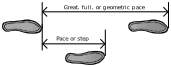

Compass and Pace Traverse Surveying
This tool assists traverse survey exercise data collection, graphing, and error illustration.
While the activity focuses on the use of compasses and pacing to measure angle and distance, other tools could be used.
The contribution of this tool aims to ease the graphing and illustration of error in traverse surveying. This exercise should not replace the process of practicing trigonometric calculations and graphing data, but supplement it. See suggested uses for the tool in the Help tab.
Follow the instructions below for the activity.

Vermessung mit Kompass und Traverse
Die Übung soll die Datenerfassung mittels Traverse (auch polygoniometrische Vermessung), die grafische Darstellung und die Veranschaulichung von Fehlern bei Vermessungsübungen vermitteln.
Die Übung basiert auf der Verwendung eines Kompasses sowie Zählung der Schritte (bzw. Ermittlung der Schrittlänge) zur Messung von Winkeln und Entfernungen, es können aber auch andere Hilfsmittel verwendet werden.
Die Übung zielt darauf ab, die grafische Darstellung und Veranschaulichung von Fehlern bei der Traverse-Vermessung zu erleichtern. Sie ersetzt das Üben trigonometrischer Berechnungen und das Darstellen von Daten nicht, sondern ergänzt diese. Mögliche Verwendungszwecke für das Tool finden Sie unter „Hilfe“.
Zur Umsetzung der Übung folgen Sie bitte den nachstehenden Anweisungen.
Instructions Anleitung
The situation. You only have a compass (or no GPS reception) and would like to record the location of other features relative to a chosen point (e.g., a tree, rock cairn, or geodetic benchmark).
A benchmark is a good point to start such an activity, but not necessary.
A benchmark is a marker, often made of metal, with an accurately known location according to a specific geographic coordinate system (i.e., a system of locating relative points for an area).
The benefit of using a geodetic benchmark is that the data collected in this exercise becomes georeferenced and can then be exported into a GIS program and be tied to a other geographic data.


Dealing with error. For this exercise we will be using a compass and pacing. A pace, in this activity, is using the following definition. When walking, a pace is one step or the distance between one foot and the other, at a consistent point (e.g., the tip or heel of the feet). See the adjacent diagram.
Other pacing definitions exist. Regardless of which 'pace' definition you use, it is important to specify to your colleagues which your are using.
For this activity we will begin by measuring your pace length and error percentage. This requires doing a few trials.
Note that as pace lengths vary by person only the person that has calculated their pace length (and error) should be completing the paces in the main activity.
Ausgangssituation. Sie haben nur einen Kompass (bzw. keinen GPS-Empfang) und möchten die Lage anderer Objekte in Bezug auf einen konkreten Lagepunkt (z. B. einen Baum, einen Steinhaufen oder einen geodätischen Bezugspunkt) bestimmen.
Ein Vermessungspunkt ist ein guter Ausgangspunkt für eine solche Aktivität, aber nicht unbedingt erforderlich.
Ein Vermessungspunkt ist eine Markierung, oft aus Metall, dessen Lage nach einem bestimmten geografischen Koordinatensystem (d. h. einem System zur Lokalisierung von Punkten in einem Gebiet) genau bekannt ist.
Der Vorteil der Verwendung eines geodätischen Referenzpunktes besteht darin, dass die bei dieser Übung gesammelten Daten georeferenziert werden und dann in ein GIS-Programm exportiert und mit anderen geografischen Daten verknüpft werden können.
Umgang mit Fehlern. In der Übung werden ein Kompass und Schritte (bzw. Schrittlängen) verwenden. Ein Schritt wird in dieser Übung wie folgt ermittelt. Ein Schritt ist der Abstand, welcher beim Gehen zwischen einem festgelegten Kontaktpunkt am Fuß (z. B. Fußspitze oder Ferse) zwischen dem linken und dem rechten Fußes entsteht (siehe nebenstehendes Diagramm).
Es gibt auch andere Definitionen eines Schrittes. Unabhängig davon, für welche Definition man sich entscheidet, sollte diese immer klar kommuniziert werden.
Bei dieser Übung werden wir zunächst deine Schrittlänge und deinen Fehlerprozentsatz messen. Dazu musst du einige Versuche durchführen.
Da die Schrittlänge von Person zu Person unterschiedlich ist, sollte nur die Person, die ihre Schrittlänge (und ihren Fehler) berechnet hat, die Schritte in der Hauptaktivität absolvieren.
Compass directions are wrong in most places (and time), but to varying degrees. Compass bearings/directions follow magnetic fields across the surface of the earth that differ in heading to true north. True north is the northern point at which the the earth rotates around its axis. It is used by geographic and projected coordinate systems to orient points relative to one another. A conversion is almost always required between magnetic north and true north. Additionally, the magnetic field is constantly (slowly) changing and can have large declinations. For example, a large part of Brazil has a declination of -20° or greater.
It is therefore recommended or even necessary to know the local magnetic declination when using a compass. Magnetic declination is the angle difference between the direction of the earth's northern axis of rotation and the direction the local magnetic field is aligning a compass's needle.
Some compasses allow you to compensate for magnetic declination. Alternatively you can compensate for it manually. Remember that the given magnetic declination is the error, and therefore you must compensate by inversing the magnitude/sign. So if I take a compass reading in Trier, Germany, of 140° and the local magnetic declination is +2.7° then the corrected reading is 137.3°. In Cape Town, South Africa, a similar compass reading of 140° with the given magnetic declination of -25.7° yields an adjusted reading of 165.7°.

Magnetic declination in Australia in 2020 (Source: NOAA/NCEI and CIRES). While magnetic declination as of 2020 was about -2° in Perth, it was about +12° in Melbourne. The figure is not indicating the direction of the magnetic field.
Kompassrichtungen sind an den meisten Orten (und Zeiten) falsch, jedoch in unterschiedlichem Maße. Kompasspeilungen folgen magnetischen Feldern auf der Erdoberfläche, die sich in ihrer Richtung vom geographischen Norden unterscheiden. Der geographische Norden ist der nördliche Punkt, an dem sich die Erde um ihre Achse dreht. Er wird von geografischen und projizierten Koordinatensystemen verwendet, um Punkte relativ zueinander auszurichten. Fast immer ist eine Umrechnung zwischen dem magnetischen Norden und dem geographischen Norden erforderlich. Hinzu kommt, dass sich das Magnetfeld ständig (langsam) verändert und große Deklinationen aufweisen kann. Zum Beispiel hat ein großer Teil Brasiliens eine Deklination von -20° oder mehr.
Es ist daher empfehlenswert oder sogar notwendig, die örtliche magnetische Deklination zu kennen, wenn man einen Kompass benutzt. Die magnetische Deklination ist der Winkelunterschied zwischen der Richtung der nördlichen Rotationsachse der Erde und der Richtung, in die das örtliche Magnetfeld die Nadel eines Kompasses ausrichtet.
Einige Kompasse bieten die Möglichkeit, die magnetische Deklination zu kompensieren. Alternativ kann sie aber auch manuell korrigiert werden. Denken Sie daran, dass die gegebene magnetische Deklination den Fehler darstellt und Sie daher die Kompensation durch Umkehrung des Vorzeichens vornehmen müssen. Wenn Sie zum Beispiel in der Stadt Trier, Deutschland, einen Kompasswert von 140° ablesen und die örtliche magnetische Deklination +2,7° beträgt, ist der korrigierte Wert 137,3°. In Kapstadt, Südafrika, ergibt eine ähnliche Kompassablesung von 140° mit der angegebenen magnetischen Deklination von -25,7° eine korrigierte Ablesung von 165,7°.
Magnetische Deklination in Australien im Jahr 2020 (Quelle: NOAA/NCEI und CIRES). Während die magnetische Deklination im Jahr 2020 in Perth etwa -2° betrug, lag sie in Melbourne bei etwa +12°. Die Abbildung gibt nicht die Richtung des Magnetfelds an.
Create a new project Ein neues Projekt erstellen
Select a project below or create a new one.
Projects allow you to save multiple traverses.
Wählen Sie ein bestehendes Projekt aus oder erstellen Sie ein neues Projekt.
In jedem Projekt können mehrere Traversen gespeichert werden.
Select an existing project
Wählen Sie ein vorhandenes Projekt aus
Calculating your error
Preceeding traverse measurements relative to a bench mark it is necessary to calculate your error in distance and direction measurements.
Berechnen der Abweichung
Bevor Sie mit der eigentlichen Traverse-Messung beginnen, sollte der Fehler bei der Messung von Entfernung und Richtung berechnet werden
Distance error
Depending on your means of measuring distance you will have a different error rate in your measurements. Using paces will have more error than a tape measure for example.
Entfernungsfehler
Je nach Art der Entfernungsmessung ergeben sich unterschiedliche Fehlerquoten bei den Messungen. Bei der Verwendung von Schritten als Maßeinheit ist die Fehlerquote höher als bei der Verwendung eines Maßbands, da die Schrittlänge immer etwas variiert.
Do you already know your pace distance and error percentage?
Kennen Sie bereits Ihre Schrittlänge und Fehlerquote?
Pace measurement exercise
To calculate your pace and distance measurement error you must complete pacing trials between points of known distance.
Walk repeatedly between points of known distance, submitting the number of paces you took to complete the distance.
An example pacing trial of 32 paces for a distance of 25 metres.

Übung zur Bestimmung der Schrittlänge
Um den Fehler bei der Messung von Entfernungen durch Schritte zu berechnen, müssen Sie entlang einer abgemessenen und bekannten Distanz Schrittmessversuche durchführen.
Gehen Sie die Distanz wiederholt ab und notieren Sie die Anzahl der Schritte, die Sie für die Strecke benötigt haben.
Ein Beispiel für einen Versuch mit 32 Schritten über eine Strecke von 25 Metern.
Direction / Azimuth error
Richtungs-/ Azimutfehler
Azimuth is compass direction. Compass direction readings or measurements also have error. When reading your compass consider how accurately your target and the value you report match. This is likely in the range of 2-5 degrees!
While distance error is percentage based, azimuth error is value based.
Der Azimut ist die Kompassrichtung. Kompassrichtungsmessungen sind ebenfalls fehlerhaft. Berücksichtigen Sie beim Lesen Ihres Kompasses, wie genau Ihr Ziel und der von Ihnen gemeldete Wert übereinstimmen. Dies liegt wahrscheinlich im Bereich von 2-5 Grad!
Während der Entfernungsfehler prozentual ist, ist der Azimutfehler wertbasiert.

The provided error value for compass readings will be allocated to each side of measurements to estimate possible error.
Der angegebene Fehlerwert für Kompassmessungen wird jeder Seite der Messungen zugeordnet, um den möglichen Fehler abzuschätzen.
Magnetic declination error
Magnetischer Deklinationsfehler
As outlined in the introduction, compasses measurements have error specific to their location used.
Specify below your local magnetic declination value. This will be applied to your azimuth measurements.
Wie in der Einleitung beschrieben, weisen die Kompassmessungen einen Fehler auf, der vom verwendeten Standort abhängt.
Geben Sie unten den lokalen Wert für die magnetische Deklination an. Dieser wird auf die Azimutmessungen angewendet.
This is optional as you can compensate for this in other ways. You may also change this later and your recorded data will adapt.
Die Angabe ist optional, da die Abweichung auch auf andere Weise kompensiert werden kann. Dieser Wert kann später noch geändert werden, die aufgezeichneten Daten werden entsprechend angepasst.

Compasses point to magnetic north, not true north. Your local difference is called the magnetic declination.
Kompasse richten sich nach dem magnetischen Norden aus, nicht nach dem geografischen Norden. Der örtliche Unterschied wird als magnetische Deklination bezeichnet.
Begin survey traverse Mit der Vermessung beginnen
The area below represents your field space. The triangular marker in the centre is your starting benchmark - a known point that you will base your measurements upon.
Select a benchmark or station to see possible operations.
Der Bereich unten stellt Ihr Untersuchungsgelände dar. Das dreieckige Symbol in der Mitte ist der Startpunkt - ein bekannter Punkt, auf dem die Messungen gestützt werden.
Wählen Sie einen Lagepunkt oder einen Referenzpunkt im Gelände aus, um mögliche Operationen auf der Karte anzuzeigen.
Target is of type:
Kategorie des Ziels:
Edit measurements to the selected station.
Bearbeiten Sie Messungen zur ausgewählten Station.
Station type:
Lagepunktstyp:
Click on another point/station to create a wall to it.
Wählen Sie einen anderen Lagepunkt aus, um eine Begrenzung zu diesem Punkt hinzuzufügen.
Click the other benchmark that represents the same location. Error correction will be applied.
.Klicken Sie auf den anderen Benchmark, der denselben Standort darstellt. Die Fehlerkorrektur wird angewendet.
Export
Export
All the data will be exported in GeoJSON format, directly visible in QGIS or compatible GIS. Files are separated by feature type (e.g., points, lines, and polygons) as well as duplicated for measured (data entered) and corrected when closed traverses are completed. Data is georeferenced if northing and eastings are provided.
Note that the SVG figure/map will also be exported as is currently displayed - you may wish to (de)activate CTEC.
You will still need to define your projection coordinate system in your GIS to complete the georeferencing.
Alle Daten werden im GeoJSON-Format exportiert und können direkt in QGIS oder einem kompatiblen GIS angezeigt werden. Die Dateien sind nach Merkmalstyp (z. B. Punkte, Linien und Polygone) getrennt und werden für gemessene (eingegebene) Daten dupliziert und korrigiert, wenn geschlossene Traversen (Polygonzüge) abgeschlossen sind. Die Daten sind georeferenziert, wenn nördliche und östliche Deklinationswerte angegeben wurden.
Beachten Sie, dass die SVG- Karte auch so exportiert wird, wie sie derzeit angezeigt wird - CTEC kann (de)aktiviert werden.
Das Projektionskoordinatensystem muss noch im GIS definiert werden, um die Georeferenzierung abzuschließen.
Exported data viewed in QGIS with a base map provided by © OpenStreetMap contributors. Red features are raw measurements. Green features are through closed traverse correction. Multiple exports are displayed to show magnetic declination compensation (in blue).
Exportierte Daten in QGIS mit einer Basiskarte, die von © OpenStreetMap-Mitwirkenden bereitgestellt wurde. Rote Lagepunkte sind Rohmessungen. Grüne Lagepunkte wurden durch geschlossene Polygonzüge korrigiert. Mehrere Exporte werden angezeigt, um den Ausgleich der magnetischen Deklination (in blau) zu zeigen.
How to use this resource
This application is meant for use in a field surveying course to supplement introductory concepts. Initial methods teaching of relative location measurement introduce the trigonometry (angle and distance measurements). This can be done with a compass and pacing, or alternatives.
This resource is designed for the following uses. Following a first compass and pacing traverse survey exercise, consisting of manual data recording (pencil and paper), calculation, and graphing of relative locations:
- for graphing collected measurements as a comparison to manual graphing
- a second survey exercise is completed but using this application to illustrate error accumulation
- to compare closed and open traverse error
- integrating collected data into a GIS for further analysis
More generally this resource offers a variety of uses:
- Explanation of pacing, azimuth, magenetic declination error
- Easy data entry and visualization in the field that can highlight recording erros while still in the field
- Easy graphing of data through export into a GIS
- A novel visualizing of error accumulation
Verwendung bzw. Einsatz der Übung
Diese Anwendung ist für den Einsatz in einem Feldvermessungskurs zur Ergänzung einführender Konzepte gedacht. Bei der Vermittlung erster Methoden der relativen Ortsbestimmung wird die Trigonometrie (Winkel- und Entfernungsmessungen) eingeführt. Dies kann mit einem Kompass und einem Schrittzähler oder mit Alternativen geschehen.
Die Übung ist für die folgenden Verwendungszwecke konzipiert. Im Anschluss an eine erste Vermessungsübung mit Kompass und Traverse (Entfernung per Schrittzählung), bestehend aus manueller Datenaufzeichnung (Bleistift und Papier), Berechnung und grafischer Darstellung der relativen Standorte:
- zur grafischen Darstellung der erfassten Messungen als Vergleich zur manuellen Darstellung
- eine zweite Vermessungsübung wird durchgeführt, aber mit der Intention die Fehlerakkumulation zu veranschaulichen
- zum Vergleich von Fehlern bei geschlossenen und offenen Traversen
- Integration der erfassten Daten in ein GIS zur weiteren Analyse
Allgemeiner bietet diese Übung eine Vielzahl von Einsatzmöglichkeiten:
- Erklärung von Schrittweite, Azimut, magnetischem Deklinationsfehler
- Einfache Dateneingabe und Visualisierung im Feld, die Aufzeichnungsfehler noch im Feld hervorheben kann
- Einfache grafische Darstellung der Daten durch Export in ein GIS
- Eine neuartige Visualisierung der Fehlerakkumulation
Frequently asked questions
Closed traverse
How is the closed traverse error correction performed?
The error correction from a closed traverse is performed using Bowditch’s Rule.
What happens if there are multiple georeference benchmarks?
Error correction is only directly applied to the station legs between the original benchmark and the next found georeference benchmark. Other points are corrected based on the changes to their dependencies.
Data
Where is the data stored?
In your browser and it's only accessible by you.
Learn more about localStorage.
How do I delete the project data?
You can simply clear the site data, similarly to how it is done for cookies or the cache in your browser.
Häufig gestellte Fragen
Geschlossene Traversen
Wie wird die Fehlerkorrektur bei einem geschlossenen Polygonzug durchgeführt?
Die Fehlerkorrektur eines geschlossenen Polygonzugs wird mit Hilfe der Bowditchschen Regel durchgeführt.
Was passiert, wenn es mehrere Georeferenzpunkte gibt?
Die Fehlerkorrektur wird nur direkt auf die Stationsabschnitte zwischen dem ursprünglichen Bezugspunkt und dem nächsten gefundenen Georeferenzbezugspunkt angewendet. Andere Punkte werden auf der Grundlage der Änderungen an den von ihnen abhängigen Punkten korrigiert.
Daten
Wo werden die Daten gespeichert?
In Ihrem Browser und sie sind nur für Sie zugänglich.
Erfahren Sie mehr über localStorage.
Wie kann ich die Projektdaten löschen?
Sie können die Daten der Website einfach löschen, ähnlich wie bei Cookies oder dem Cache in Ihrem Browser.
Aspects to still develop:
- Measurements are currently using trigonometry (angle + distance), add a triangulation option (angle + angle).
Aspekte, die noch zu entwickeln sind:
- Die Messungen verwenden derzeit Trigonometrie (Winkel + Entfernung), fügen Sie eine Triangulationsoption (Winkel + Winkel) hinzu.
Testing & demonstration data
Some automated inputs for testing or demonstration:
These will delete any existing project named 'test'.
Daten für Tests und Demonstrationen
Einige automatisierte Eingaben zu Test- und Demonstrationszwecken:
Diese löschen jedes bestehende Projekt mit dem Namen "Test".